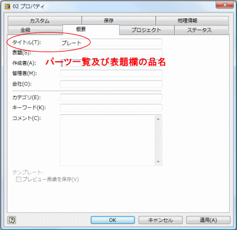
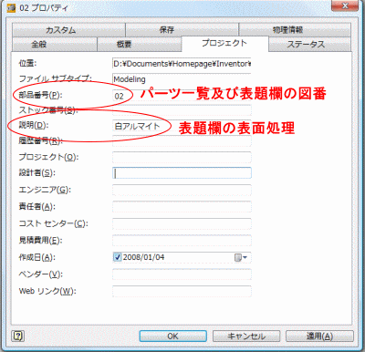
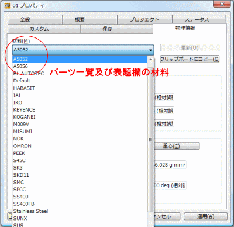
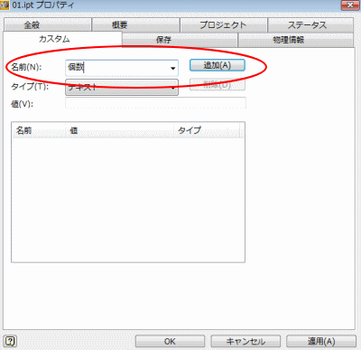
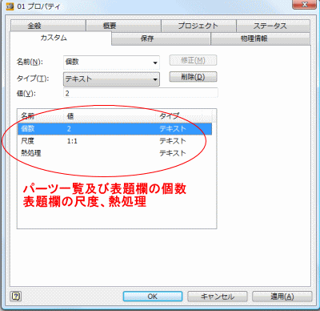
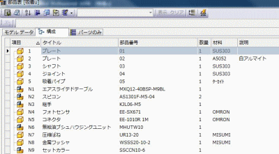
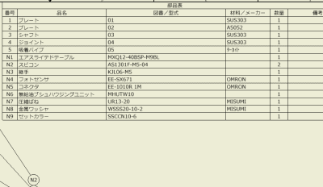
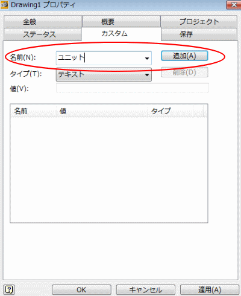
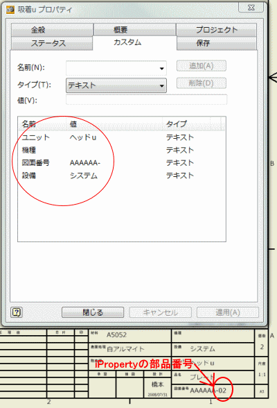

iProperty
パーツやアセンブリの情報を設定して図面に反映します。
１．パーツでの設定iProperty各ファイルに関する情報で、図面のパーツ一覧などの自動更新が出来る。での設定が図面のパーツ一覧及び表題欄とリンクしています。 |
|
操作方法 |
|
|  |
iPropertyの選択方法として、メニューのファイルからやブラウザパーツ、アセンブリ、図面内の各要素（フィーチャや拘束状態、部品構成等）をツリー状に表したもののパーツ名を右クリックからでも選択できます。 |
|  |
|
|  |
|
|  | ＜カスタムで個数、尺度、熱処理を設定しておきそれぞれ値を入力します＞
カスタムで常に個数等を表示させる為には、新規作成で"Standard.ipt"を開き、カスタム設定した後"Standard.ipt"に上書き保存します。 |
|  | カスタムで設定した項目に値を入力する。
|
|  | アセンブリ複数のパーツを集めて組み立てたもの。機械の組立。の部品表、図面のパーツ一覧ではそれぞれ左図の用にipropertyで入力した内容が適応されています。
|
|  | 図面のパーツ一覧 |
２．図面での設定図面ではカスタムのみ設定しています。 |
|
操作方法 |
|
|  | カスタムに項目を増やす。
カスタムで常にユニット等を表示させる為には、新規作成で"Standard.idw"を開き、カスタム設定した後"Standard.idw"に上書き保存します。 |
|  | カスタムで設定した項目に値を入力する。
1ユニット10前後（多すぎると管理しにくいので）のパーツにして、組図に部品表を表示しています。 左図赤丸内は１つのファイル（組図と部品図）では全て共通になります。図面番号の数字部分はパーツのiPropertyの部品番号が入ります。 |